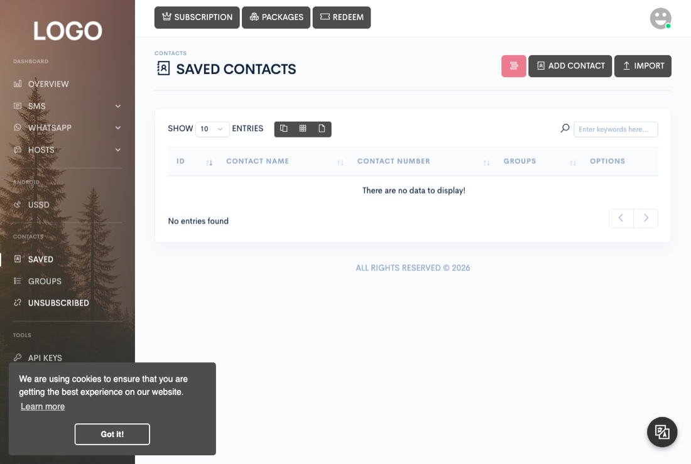
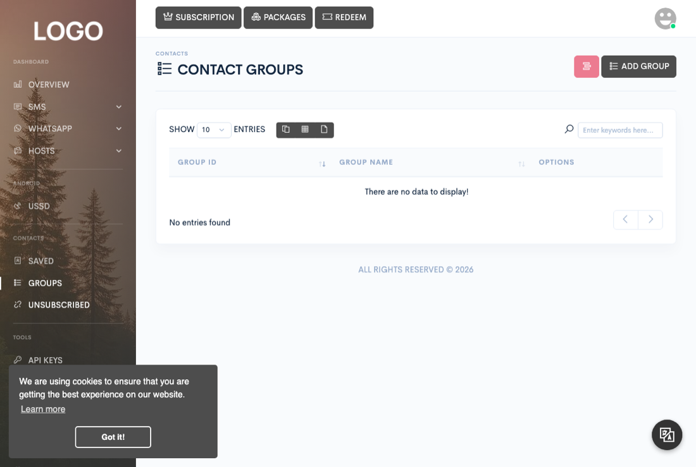

Messaging
Contacts
Manage the people you message: save individual contacts, organize them into groups you can target with a single click, and keep your unsubscribed list so you don't message someone who has opted out.


Contacts live under their own section of the dashboard sidebar, available regardless of your subscription: Saved, Groups, and Unsubscribed.
Creating contact groups
Groups are created from Contacts → Groups with the Add group button — a group is nothing more than a name; there's no separate configuration on it. Groups exist to be assigned to contacts and targeted by bulk sends (see below); a contact can belong to more than one group at once.
Adding a contact
The Saved page's Add contact button takes a name, a phone number, and one or more existing groups. The number is parsed and normalized the same way SMS recipients are; a number already saved for your account is rejected as a duplicate, and how many contacts you can save in total is governed by your subscription's contact limit.
Importing contacts from a spreadsheet
The Saved page's Import button uploads an .xlsx
file. A ready-to-fill template is linked directly from the upload form.
Your header row needs three columns, by name: phone,
groups, and name. For each data row:
- phone must parse as a valid mobile number — the same mobile-only check the unsubscribe page uses — or the row is skipped.
- groups is a comma-separated list of numeric group IDs, not group names. Every ID listed must already belong to an existing group on your account, or the row is skipped — the importer matches strictly by ID and never looks a group up by name.
- name is optional; if it's blank, the phone number is used as the contact's name.
Rows that fail validation are silently skipped rather than aborting the whole import — the rows that pass are still saved.
Using groups as campaign targets
Every bulk send form on the SMS and WhatsApp pages — bulk paste and spreadsheet upload alike — offers a Groups selector alongside the pasted numbers box. Selecting one or more groups expands to every contact currently in them at send time, merged with whatever numbers you pasted directly, then deduplicated and split across your chosen devices, gateways, or WhatsApp accounts. There's no separate "campaign target" concept beyond this — a group is just a saved, reusable recipient list.
Unsubscribes
The Unsubscribed page lists numbers that have opted out of receiving further messages from your account. A number lands there through the public unsubscribe link, which every bulk message can include as a shortcode or a keyword-based alternative. Visiting that link validates the number, and — only if it parses as a valid mobile number — adds it to your account's unsubscribed list; anything else is silently ignored rather than recorded.
Bulk paste, spreadsheet upload, and scheduled sends all consult this list and silently skip any recipient already on it.